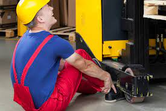
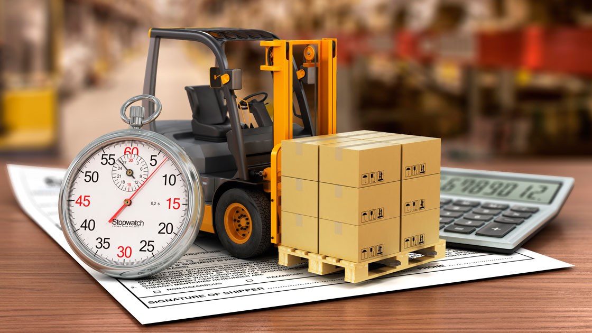
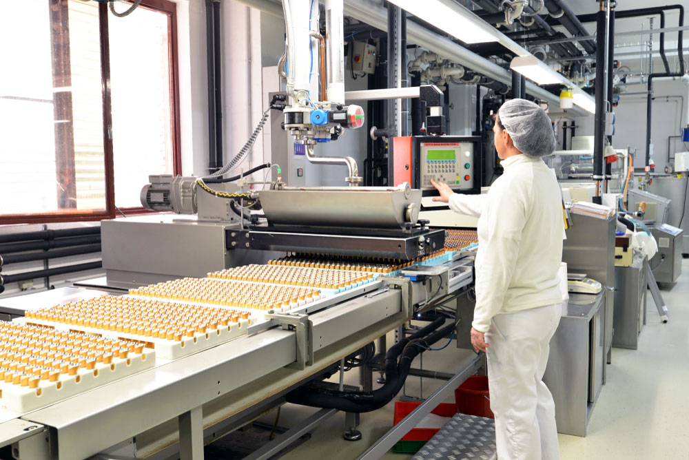
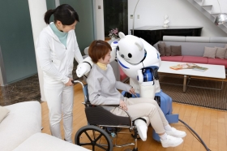

La automatización industrial busca consolidar y lograr diversos objetivos mediante la incorporación procesos mediante la Ingeniería en automatización, pirámide de procesos, tecnologías, técnicas e instrumentos.
Este objetivo tiene la finalidad de poder remplazar a los humanos que realizan trabajos pesados que pueden ser peligrosos de elaborar, por maquinas automatizadas que realicen estas actividades y así implementar la seguridad de los empleados y reducir el riesgo de alguna lesión. Hay empresas que realizan trabajos muy peligrosos y muchas personas resultan heridas y esto hace que la empresa pierda personal y hasta pueden ser demandados. Lo mejor en estos casos es invertir en una maquina automatizada que haga ese trabajo pesado. Estas maquinas, no solo reducirán el riesgo de alguna lesion a un empleado, sino tambien mejorarán la calidad del producto y las condiciones de trabajo serán mejores, la maquina permitirá tener un mejor espacio de trabajo y el tiempo de produccion será menor.
Este objetivo de la automatización busca reducir el tiempo de produccion de productos y reducir el esfuerzo humano al fabricar estos productos. Al usar maquinas automatizadas van a hacer que los humanos no trabajen tanto como antes y su esfuerzo va a ser minimo ya que ellos solo tendrían que programar las maquinas y verificar que todo este correcto en la producción. También al usar maquinas automatizadas estás haran el trabajo mas rapido, pues al ser maquinas el margen de error no es mucho y no se confunden como normalmente lo haría un humano, esto no aolo reduce tiempo, también reduce dinero al no estar desperdiciando material.
 Estos dispositivos automatizados buscan el bien de las personas y hacer sus vidas más fáciles, esto resulta muy útil para personas que tiene algún tipo de discapacidad ya que no pueden realizar con facilidad actividades de la vida cotidiana y hay muchos dispositivos que pueden ayudar a esto. Como vimos anterior mente hay asistentes virtuales que ayudan mucho en las labores de la casa, hay automóviles autónomos que nos ayudan a transportarnos, hay lavavajillas que lavan los platos por nosotros y muchos más dispositivos. En un futuro podríamos llegar a tener robots que nos ayudarían en cualquier labor como si fueran humanos, esto ayudaría muchos a las personas con discapacidad al tener a alguien que los sirva y los ayude en todo.
(c) Todos los derechos reservados Diseñado por Katherine Ballesteros - 2021